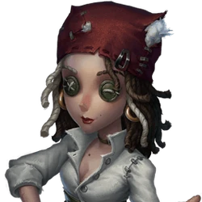
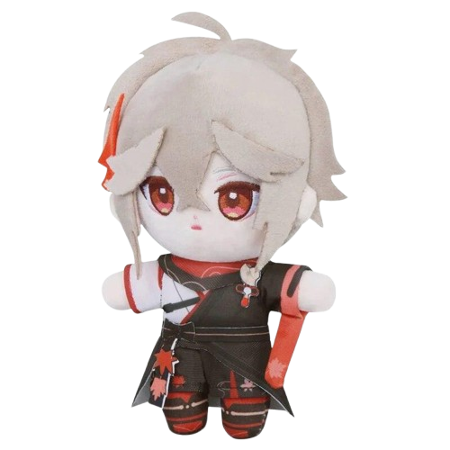
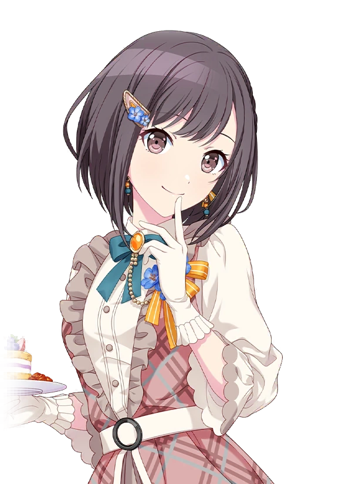
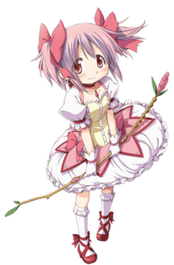
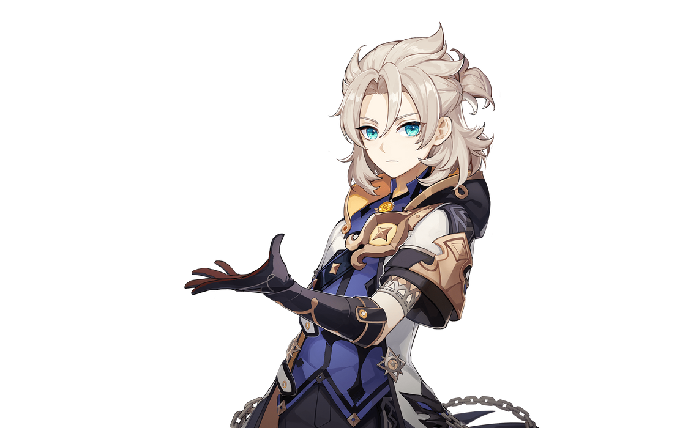
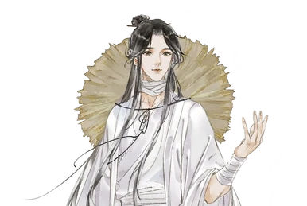
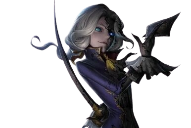

Я доўга думала над тым, што хачу данесці цябе. Напэўна адзін з лепшых спосабаў паказаць тое, як я бачу цябе - прывесці прыклад у выглядзе персанажаў. Гледзячы на іх я не магу думаць не пра цябе. Гэта не значыць, што яны раўняюцца тваёй асабістасці ці што іх характар падобны на твой. Прыемнага прагляду!!
Дэмі
Я хацела б пачаць з нашай агульнай гіперфіксацыі - ідэну, хаця гэта ДАЛЕКА не першы фандом, па якому я цябе ведаю, усе ж ен значыць многа для цябе на дадзены момант. Дэмі - той персанаж, на яком ты і іграеш многа, і кажаш пра няе многа, што цікава слухаць. Думаю, калі б вы з ёй сустрэліся - адразу знайшлі агульную мову за бутэлькай сідру. Вас абагульняе не толькі колер валосся і ў якойсці меры стыль, а яшчэ праца ў баре і сіблінг. Кожны раз калі я бачу Дэмі ў тіме, я думаю, што гэта ты. І пасля сваей "закоханасці" у ёй ты кажаш, што не лесбіянка???? ВТФ РІТА????????? У ДЭМІ ЗАНАДТА МОЦНЫЯ ВЛВ ВАЙБЫ (у цябе таксама)


Казуха
Менавіта геншын з'яднаў нас даўным-даўно і з тых часоў нежны, рамантычны, грацыёзны і сввабодны Казуха стаў для мяне прамой асацыяцыяй з табой. Я думаю, ты б была яго жаночай версіяй, хаця адзінае што ў вас не сыходзіцца - знешнасць. Ен, як і ты, наўрадці будзе трымаць вакол сябе таксічных і непрыемных людзей. Казу эмпатычны і чулы, і ты, на маю думку ў гэтым сэнсе дуже з ім рэлэйтішся. Мне падобаецца твая легкасць, смеласць і ганарлівасць. Ты не станеш адмаўляцца ад сваёй мэты і хутчэй за ўсе пойдзеш самым цяжкім шляхам, калі іншага не будзе
Эна
Я не памятаю дакладна як і калі ты заташчыла мяне ў секай, але ты зрабіла гэта і цяпер мы разам траўмованы сюжэткай Мізукі. Дарэчы а Мізукі. Наступны персанаж - Эна. У адрозненні ад Казухі вы падобны не толькі тым, што маеце схожыя рысы характару, але і кароткімі цемнымі валасамі і вачыма. А яшчэ хобі. Думаю, несамненны факт у тым, што з тых персанажаў якіх я ведаю няма нікаго больш падобнага да цябе, чым Эна. Ты прыміш сваіх сяброў, будзеш старацца і старацца, а яшчэ ты добра ставішся да дзяцей і хочаш рабіць добрыя рэчы для іншых. Ты такая цудоўная. Калі я думаю пра цябе ў кантэксце сваёй будучыні, я знаю што чалавек, які кініць Эну не можа быць паганым ні ў якім выпадку. Спадзяюся, ты бярэш толькі добрае ад тых герояў, якія цябе падобаюцца. Бо, калі чэсна, мне было б сумна пералічаць усе твае сходства з ей.


Мадока
Добра памятаю, як ты прасіла мяне паглядзець Мадоку, як я плакала на апошняй серыі і як мы глядзелі фільм. Гэта адно з тых успамінаў, якое так моцна і цепла звязана з пачуццем чагосьці добрага і ў той жа час сумнага. Яно асацыюецца з табой. А Мадока ў сваёй наіўнасці (у добрам сэнсе) і дабраце, безумоўным жаданні быць харошым чалавекам, карыснай людзям, добрай сяброўкай, дачкой і сястрой ( добрай дзяўчынай ты і так з'яўляешся) цалкам падыходзіць цябе і тваёй светлай натуры. Мадока - сапраўднае сонейка. І ты - теж
Альбедо
І зноў мы павярнуліся да таго, з чаго пачыналі. Альбедо не настолькі моцна асацыюецца з табой як Казу, але я ўсе ж выйрашала дадаць яго сюды каб выдзяліць тваю флегматычнасць і рацыянальнасцью, а так сама разумны падыход да таго, чым ты займаешся, будзь то падтрымка, вучоба, хобі і праца. Мне падобаецца гэтая частка цябе. Ты можаш спакойна разважаць і пры гэтым не губляць сваю эмацыйнасць. І, канешне, варта персанажу ўзяць фарбы, як я аўтаматычна правяду паралель з табой


Се Лянь
Се Лянь як персанаж з цяжкім мінулым і шчаслівай будучыняй, які не губляе надзеі ў сябе і ўмее шчыра кахаць дуже падобны да цябе. Можа для мяне многа зыграла яго нежнасць (як з Казухай) адносна таго, чаму я релейчу яго з табой. А можа мне проста падобаецца тое, што ты такая ж легкая і чулая як і ен.
Джозеф
Трошкі не відавочная гісторыя, якую я ніяк цябе не растлумачу, факт у тым, што Джозеф па якойсці прычыне асацыюецца з табой. Сумняваюся, што вы падобны ў чымсці. Але вайб з Джозефам дэфінэтлі прысутнічае. Такі элітны вайб. Арыстакратычны, стрыманы і спакойны. Я ўспрымаю толькі адзін від Джозеф-мэйнаў: ты
